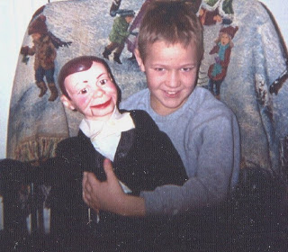

Free offer
8/16/2009
Twenty or so years ago Maher Studios was asked by the publishers of "Free Stuff For Kids Yearbook" to consider making a free offer to readers of their annual book. There was no charge to Maher Studios to have a page in the book, but we were required to agree to fulfill any offer made for the entire year. With the desire to see more youngsters become involved in ventriloquism, we offered a free "How to Become A Ventriloquist" booklet. Over the course of the year, hundreds of kids, (teachers, parents, etc.) wrote to request the free material. (It's possible someone reading this post was one of those youngsters.)
The surprising thing is, although the deadline for the free offer passed many years ago, we still periodically receive a letter from someone who has come across an old copy of the book. Such as this letter received last week:
"Gentlemen: My 9 year old grandson has a 40 year old Charlie McCarthy. He does very well trying to be 'Charlie'. Would you please send me a copy of your free booklet, 'How To Become A Ventriloquist', so I can give it to him?"
With the offer long ended, we normally discard such requests. But this grandma sent a picture - who could resist that face? I mailed a complimentary copy of "Ventriloquism In A Nutshell". I don't want to be the person who stood in the way of a future generation's Edgar Bergen!
* * * * *
Reader Comment: "Clinton,I was in the 4th grade when Free Stuff for Kids was published. As part of a class project to learn about the U.S. postage system, our teacher had each of us write off to order something. I did not know about Maher Studios at the time, but I did write to you and request a copy of 'How to Become A Ventriloquist'. Thanks for that." Charles
The surprising thing is, although the deadline for the free offer passed many years ago, we still periodically receive a letter from someone who has come across an old copy of the book. Such as this letter received last week:
{kind=link}

"Gentlemen: My 9 year old grandson has a 40 year old Charlie McCarthy. He does very well trying to be 'Charlie'. Would you please send me a copy of your free booklet, 'How To Become A Ventriloquist', so I can give it to him?"
With the offer long ended, we normally discard such requests. But this grandma sent a picture - who could resist that face? I mailed a complimentary copy of "Ventriloquism In A Nutshell". I don't want to be the person who stood in the way of a future generation's Edgar Bergen!
* * * * *
Reader Comment: "Clinton,I was in the 4th grade when Free Stuff for Kids was published. As part of a class project to learn about the U.S. postage system, our teacher had each of us write off to order something. I did not know about Maher Studios at the time, but I did write to you and request a copy of 'How to Become A Ventriloquist'. Thanks for that." Charles